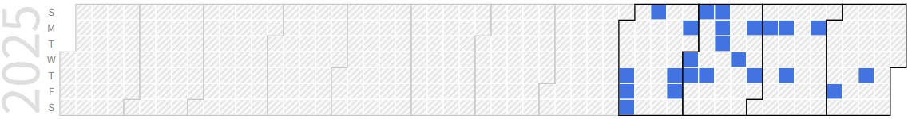

Mingyu Jeong (Undergraduate Student)
Undergraduate Student (B.S), Embedded System-on-Chip Integrator |
Repository Commit History
|  |
Introduction
Full Bio Sketch
Mr. Jeong is currently doing his undergraduate degree in Electronics Engineering at Kyungpook National University, Daegu, Republic of Korea. His research focuses on adaptive embedded control systems under real-time constraints, particularly for robust and efficient operation in embedded environments.
Research Topic
Recursive Kp Adjustment for Adaptive PID Control Error Compensation Under Timing Constraints
 Conventional PID controllers with fixed gain values often fail to provide reliable performance in the presence of unexpected high-frequency noise or external disturbances. These fixed-coefficient systems can struggle to maintain stability and may take a long time to return to the desired state, particularly in real-time embedded environments where timing constraints are strict.
Conventional PID controllers with fixed gain values often fail to provide reliable performance in the presence of unexpected high-frequency noise or external disturbances. These fixed-coefficient systems can struggle to maintain stability and may take a long time to return to the desired state, particularly in real-time embedded environments where timing constraints are strict.
In this study, an adaptive PID control system is presented that dynamically adjusts the proportional gain (Kp) in response to real-time output conditions. When high-frequency noise is detected, the system reduces Kp to narrow the bandwidth of the closed-loop transfer function, minimizing sensitivity to rapid fluctuations. Conversely, when an external disturbance causes the output to deviate from the target, Kp is increased to enhance damping and speed up recovery.
To ensure that all essential computations such as control, noise detection, and disturbance compensation are completed within the limited time of each control cycle, this study adopts the Goertzel algorithm instead of the conventional FFT for frequency analysis. While FFT requires collecting a large number of samples before performing a full computation, the Goertzel algorithm uses a recursive structure that allows calculations to be updated incrementally as each sample is received. This approach significantly reduces computation time and enables efficient real-time processing. As a result, the system is able to maintain both stability and responsiveness, making it suitable for robust control in embedded applications.
Low-Power Autonomous Driving in Familiar Environments
 Self-driving cars normally run heavy deep learning models (CNNs) all the time to see the road ahead, which uses a lot of power. Human drivers, however, often rely on memory in familiar places and do not focus as much on detailed vision. Based on this idea, our study suggests a power-saving method. We use an LSTM to check if the car is on a familiar route. When it is, the system stops the full CNN and instead uses pre-stored driving data, while a lighter early-exit CNN is still used for simple forward checking. In practice, the LSTM detects road sections that the car has passed many times. In those areas, a saved steering table is used to generate steering outputs so the CNN does not need to run. But skipping vision completely can be unsafe, so we add an early-exit CNN that runs only part of the layers to keep basic safety checks. The system keeps switching between the stored steering data, early-exit CNN, and the full CNN when needed. This loop also helps reduce errors that could build up over time. With this design, we achieved up to 40% lower power use on familiar routes compared to always running the CNN
Self-driving cars normally run heavy deep learning models (CNNs) all the time to see the road ahead, which uses a lot of power. Human drivers, however, often rely on memory in familiar places and do not focus as much on detailed vision. Based on this idea, our study suggests a power-saving method. We use an LSTM to check if the car is on a familiar route. When it is, the system stops the full CNN and instead uses pre-stored driving data, while a lighter early-exit CNN is still used for simple forward checking. In practice, the LSTM detects road sections that the car has passed many times. In those areas, a saved steering table is used to generate steering outputs so the CNN does not need to run. But skipping vision completely can be unsafe, so we add an early-exit CNN that runs only part of the layers to keep basic safety checks. The system keeps switching between the stored steering data, early-exit CNN, and the full CNN when needed. This loop also helps reduce errors that could build up over time. With this design, we achieved up to 40% lower power use on familiar routes compared to always running the CNN
Publications
Journal Publications (KCI 1)
Mingyu Jeong and Daejin Park. Shallow CNN and Past Driving Record-Based Method for Power-Efficient Autonomous Driving in Familiar Route Environments (KCI) Journal of the Korea Institute of Information and Communication Engineering, 2025.
Conference Publications (Intl. 1)
Mingyu Jeong and Daejin Park. Recursive Kp Adjustment for Adaptive PID Control Error Compensation Under Timing Constraints In IEEE Global Conference on Consumer Electronics (GCCE) 2025.
Participation in International Conference
IEEE GCCE 2025, Osaka, Japan
Last Updated, 2025.10.28